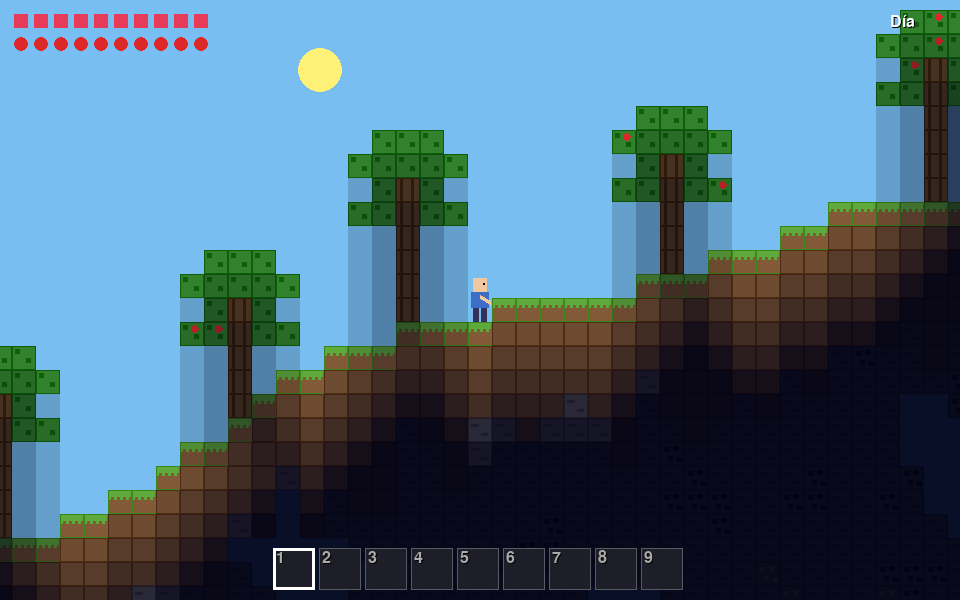

- Mundo con cielo, pasto, tierra, piedra, cuevas, árboles con manzanas y minerales (carbón, hierro, oro, diamante).
- Pica con clic izquierdo (los bloques duros necesitan mejor pico) y pon bloques con clic derecho. Inventario de 9 casillas.
- Crafteo con C: tablas, palos, mesa, antorchas que iluminan, picos de piedra / hierro / diamante.
- Día y noche con oscuridad real en cuevas. De noche salen zombies que te persiguen.
- Vida y comida (manzanas). Guarda y carga tu mundo con F5 / F9 en
mundo.json. - Todo dibujado con rectángulos, sin imágenes.
Necesita: Python 3 + pygame · Linux, Windows y Mac
⬇ Descargar .zip (14 KB) 🎮 Jugar en el navegador▶️ Cómo jugar
- Descarga y descomprime el zip.
- Instala pygame:
pip install pygame - Corre
python3 mina.py(en Windows:python mina.py; en Linux/Mac también sirve./jugar.sh).
🎮 Controles
| A / D o flechas | caminar |
| ESPACIO | saltar |
| Clic izquierdo | picar / pegar |
| Clic derecho | poner bloque |
| 1-9 o rueda | elegir casilla |
| C | crafteo |
| E | comer |
| F5 / F9 | guardar / cargar |
| R | revivir |
| ESC | salir |
⌨️ Cambiar los controles
Abre controles.txt (está junto a mina.py) y cambia la tecla después del =. Así viene de fábrica:
izquierda = a derecha = d saltar = space crafteo = c comer = e guardar = f5 cargar = f9 reiniciar = r salir = escape
Nombres válidos: letras (a, b...), flechas (up, down, left, right), space, return, tab, left shift, left ctrl y números. Si escribes una tecla que no existe, el juego avisa y usa la de siempre.
🔧 Para cambiar cómo se siente
Arriba de mina.py: SEMILLA (pon un número para que el mundo salga siempre igual) y los tamaños del mundo.